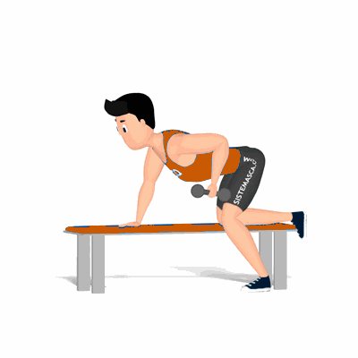

Tríceps Kickback

Exercício para fortalecimento e hipertrofia dos músculos tríceps, com foque o tríceps braquial.
Ficha Técnica
Tipo: Musculação
Grupo Muscular: Tríceps
Aparelho: Nenhum
Músculos: Nenhum
Como realizar
- Utilize um banco reto, apoie o joelho e a mão esquerda sobre o banco;
- A perna direita deverá ficar estendida e afastada do banco com o pé fixo no solo;
- Tronco na posição horizontal, segure o peso com o braço direito e posicione-o ao lado do corpo, cotovelo flexionado;
- Empurre o peso para trás utilizando a força dos tríceps até o cotovelo ficar totalmente estendido;
- Retorne à posição inicial de forma controlada;
- Repita os movimentos, conforme o número de repetições orientado pelo professor.
 RC STORE
RC STORE